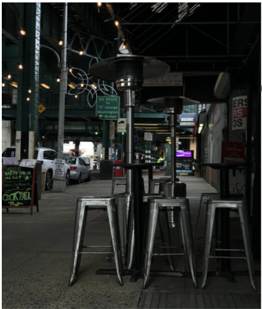

This is an alphabet board with visuals that start with the corresponding letter it is in.

This is a drawing of my pet pigeon that i had during quaratine. She was still a baby in that time so i drew the missing feather on her neck.
I also like taking photographs of places but prefer taking pictures of people. I took this Photo when i was walking from target to take the train.

This is my cat and his name is titi. I drew him being ready to "eat" a fish with soda. He passed away 2 years later from this photo.

This is a turtle made out of paper i made and decorated to make it look more like a turtle.

I used to like queens so i remade their album cover. For this i tried to make it look drastically different from the original so i used bring colors rather than just using black and white.